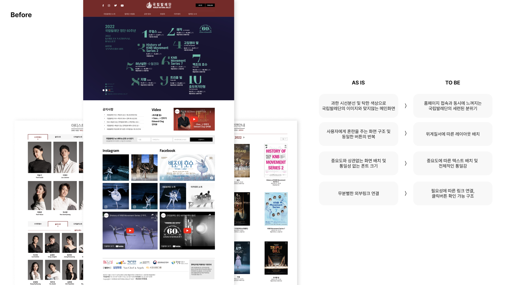
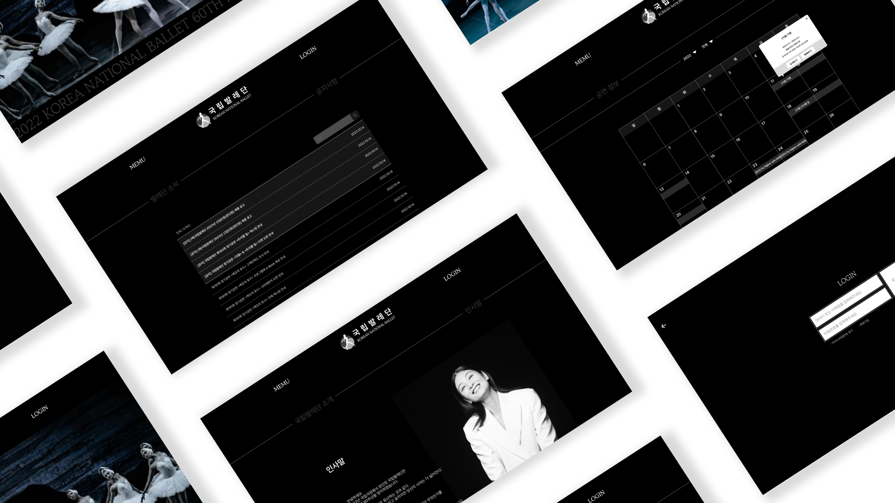
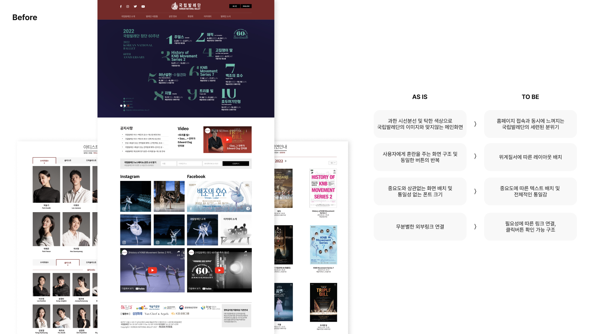
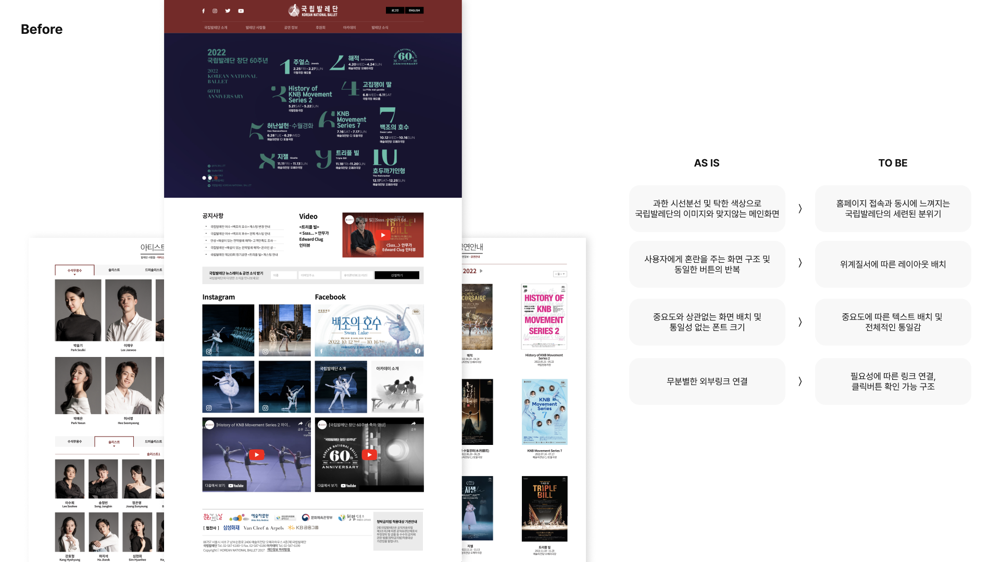
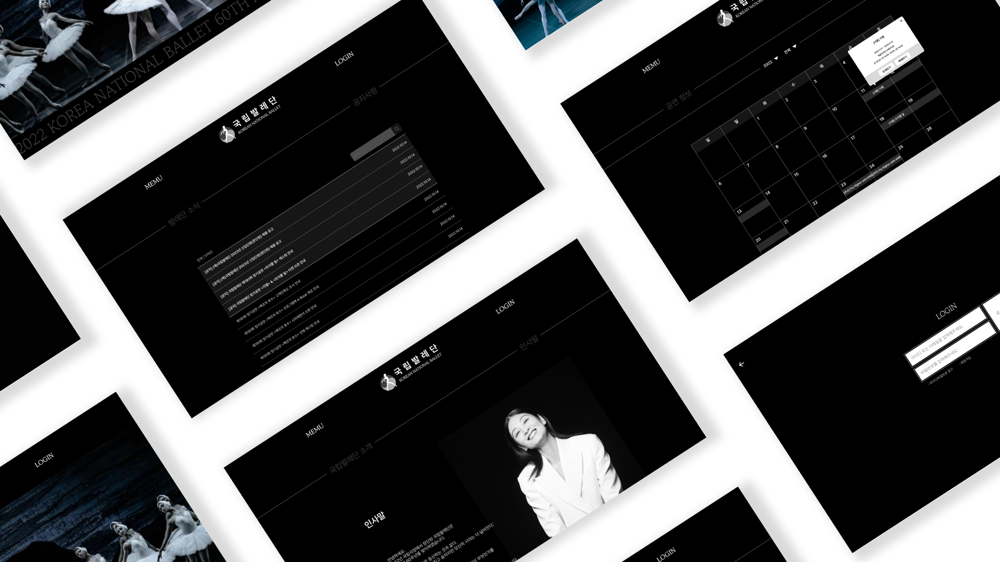
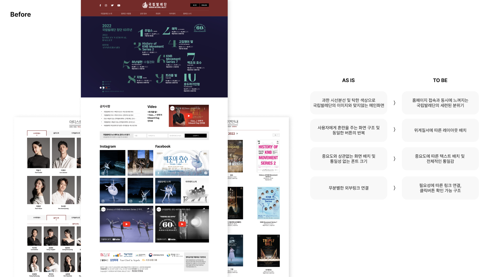
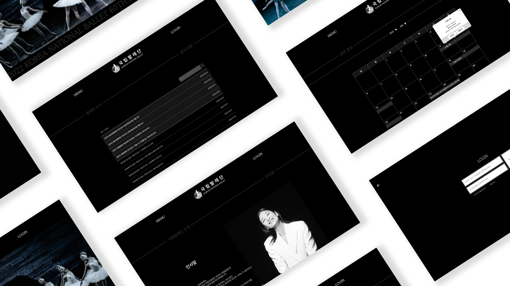
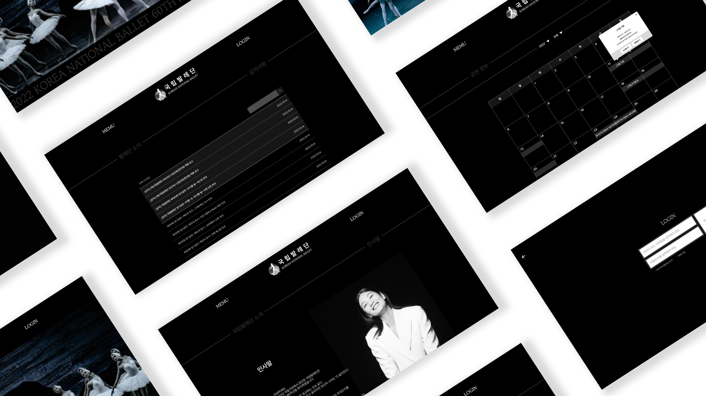
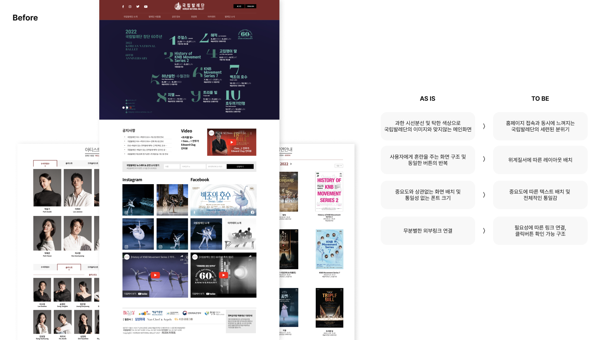
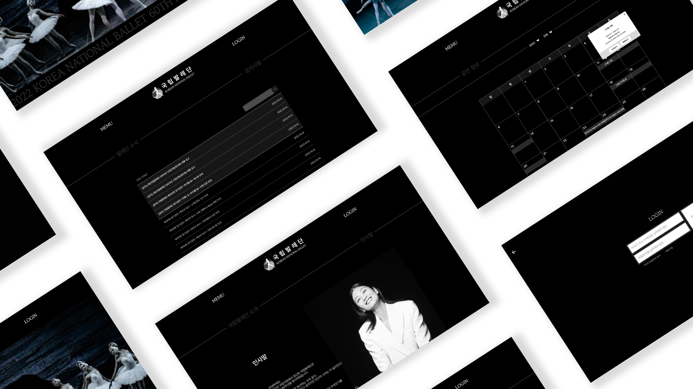

Subin Park
DESIGN
WEB
국립발레단 웹사이트 리디자인
한국의 대표적인 발레단인 국립발레단 홈페이지 리디자인 프로젝트입니다. 발레단의 이미지와 어울리지 않고 복잡한 구조인 기존 웹사이트를 보다 세련된 무드와 사용성에 초점 두어 리디자인 하였습니다.
팀원 구성: 기획 및 디자인 1명(본인)
프로젝트 기간: 2022.09-10



 


 




